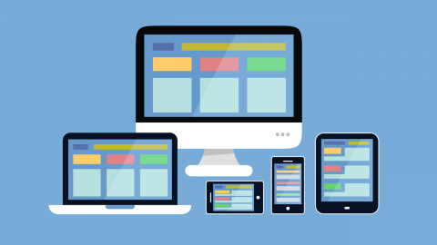
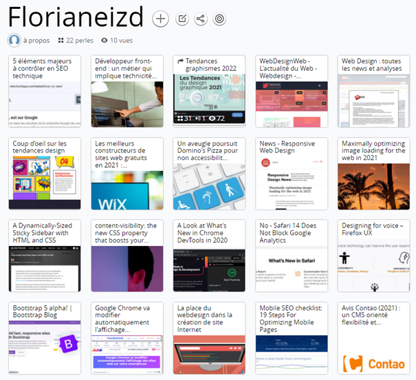
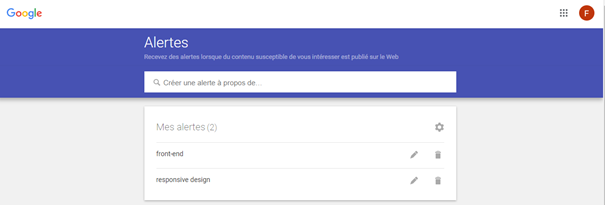

Le responsive design a pour but d’adapter le graphisme d’un site internet afin qu’il s’adapte au support sur lequel il est lu. Cela consiste donc à créer une seule interface auto-adaptable.
La technologie principale qui permet cette adaptation est CSS3 media queries. Cet outil permet de créer des règles d’affichage selon le support, cela reviens à écrire ‘’si le support fait tel taille alors afficher la vue correspondante a celle-ci’’.
Le développement web frontal (aussi appelé front-end en anglais) correspond aux productions HTML, CSS et JavaScript d’une page internet ou d’une application qu’un utilisateur peut voir et avec lesquelles il peut interagir directement.
Le principal défi du développement web frontal est de toujours s'adapter aux dernières évolutions ; les outils et les techniques de développement étant en évolution constante.
La conception des sites internet doit également être capable d’offrir une bonne ergonomie de lecture en facilitant la navigation et l’obtention d’information. Cet objectif est d’autant plus compliqué que les appareils ont des formats et tailles variés. Le développeur doit donc s’assurer que le site internet apparait correctement sur l’ensemble des navigateurs Web et des appareils disponibles.

L'outil Pearltrees

les Google alertes

Petit Retour en 2016
Un aveugle poursuit Domino's Pizza pour non accessibilité de son site Web le 8 octobre 2019 : poursuites judiciaires
Analyse : En ignorant l'appel de Domino's, la Cour suprême des Etats-Unis ouvre la porte à des poursuites judiciaires contre les sites Web et les applications mobiles qui ne sont pas accessibles aux personnes handicapées.
Guillermo Robles utilise JAWS, ou "Job Access With Speech", le logiciel de lecture d'écran le plus populaire pour les ordinateurs sous Windows. Pour s'adapter à ce type de logiciel de lecture d'écran, les graphismes et les hyperliens intégrés sur les sites Web doivent comprendre du texte alternatif (appelé "alt text") - une description de l'image qui apparaît lorsqu'un curseur de souris flotte au-dessus d'elle ou quand un logiciel de lecture d'écran la détecte.
C'est quoi JAWS ?
AWS, Job Access With Speech, est le lecteur d’écran le plus populaire au monde, développé pour les utilisateurs d’ordinateurs dont la perte de vision les empêche de voir le contenu de l’écran ou de naviguer avec une souris. JAWS fournit une sortie vocale et braille pour les applications informatiques les plus populaires sur votre PC. Vous pourrez naviguer sur Internet, écrire un document, lire un e-mail et créer des présentations à partir de votre bureau, de votre bureau à distance ou de votre domicile.